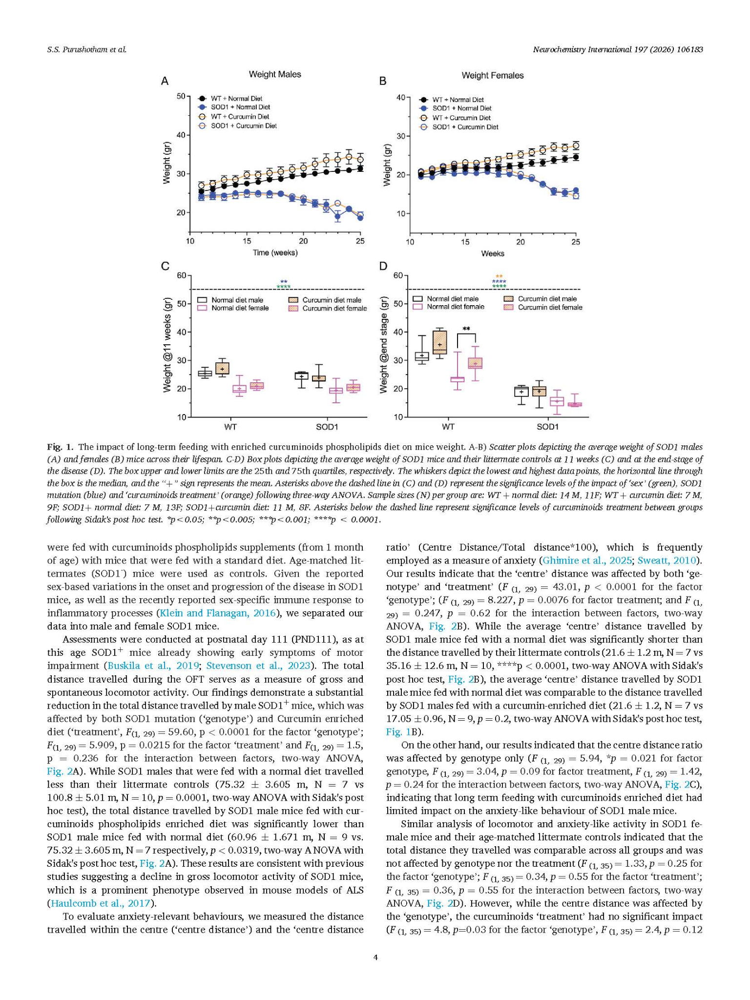

2026FeaturedThe impact of long-term feeding with curcuminoids phospholipids enriched diet on disease progression of fALS
Purushotham SS, Chesworth R, Keembiyage N, Münch G, Gyengesi E and Buskila Y (2026). The impact of long-term feeding with curcuminoids phospholipids enriched diet on disease progression of fALS. Neurochemistry International, 197, 106183. View DOI
Read paper ↗